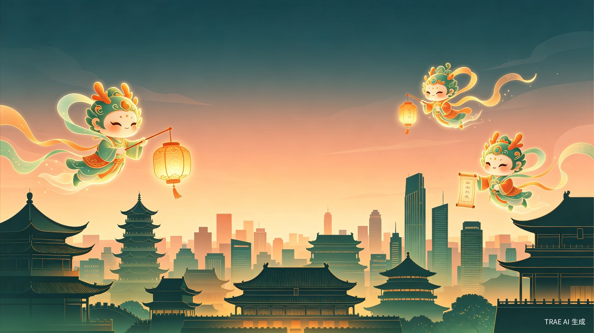

HeritageVerse — 城市非遗IP共创平台
拾遗宇宙（HeritageVerse）—— 城市非遗IP共创平台
中国拥有 1557项国家级非遗项目，但绝大多数非遗文化以静态展陈、纪录片等传统形式存在，与当代年轻人和游客之间缺乏情感连接。城市文旅普遍面临"千城一面"的困境——游客到了一座城市，看到的往往是同质化的商业街和纪念品，无法感受到这座城市独有的文化灵魂。同时，非遗传承人和地方文旅部门缺乏将非遗资源转化为可传播、可体验、可商业化的IP角色的能力与工具。
非遗不应只活在博物馆里，它应该活在每个人的日常体验中。近年来，"AI+非遗"成为文化数字化的重要方向，生成式AI为非遗从文化资源向当代创意转化提供了全新契机。我们看到AIGC技术已经能够生动再现非遗技艺，但缺少一个将非遗元素系统化转化为城市级IP宇宙的平台。
灵感来自"开放世界游戏 + 桌宠 + 城市导游"的融合体验——如果每座城市都有一群由非遗文化孕育而生的虚拟角色，游客到访时可以"捕捉"它们、与它们互动，非遗就真正"活"了起来。
一个集 IP创作引擎、IP广场社区 和 线下扫码互动体验 于一体的综合性平台（小程序 + App + Web端）。
希望打造独特的城市文化名片，提升游客体验和停留时长
拥有丰富的非遗知识，但缺乏IP化包装和数字化传播能力
追求沉浸式、有故事感的旅行体验，厌倦千篇一律的打卡式旅游
希望参与城市文化IP共创，获得创作素材和变现渠道
行前：游客打开"IP广场"，浏览某城市的非遗IP角色和世界观，被故事吸引后规划行程。
行中：到达城市后，通过景点扫码获取非遗IP角色卡片和故事，收藏到自己的IP图鉴中，角色化身城市导游讲述非遗故事。
行后：收集的角色成为"桌宠"，持续推送该城市非遗衍生故事和文创产品信息。
创作侧：传承人或创作者使用IP创作引擎，输入非遗元素（地点、工艺、美食、物件），AI辅助生成角色设定、世界观和标准交付物。
拾遗宇宙将非遗从静态的文化遗产转化为动态的、可互动的、有情感温度的IP角色，让年轻人通过"收集""养成""互动"的方式自然接触和了解非遗文化。这不仅降低了非遗传播的门槛，更让传承从"被动接受"变为"主动探索"。当每座城市都拥有自己的非遗IP宇宙，城市之间的文化差异将变得可感知、可体验，真正实现"以文塑旅、以旅彰文"的国家战略目标。
拾遗宇宙通过IP标准交付物（角色形象、世界观、故事脚本）为文旅部门和品牌方提供可商业化的IP资产，通过IP广场社区聚集流量，通过线下扫码互动提升游客停留和消费。平台可延伸出IP授权、文创电商、城市联名等多元商业模式，形成"内容创作 — 社区传播 — 线下体验 — 商业变现"的完整闭环。
小程序为主，配合Web端管理后台。MVP阶段聚焦最小可行闭环，验证核心假设。
用户输入非遗元素（地点、工艺、美食、物件），AI生成角色卡片（设定图+故事）、世界观文档、故事大纲、文创方案等标准交付物
展示各城市的非遗IP角色和世界观，游客可浏览、收藏、分享，形成社区传播效应
游客在景点扫码获取非遗IP角色卡片和故事，收藏到个人IP图鉴中，角色化身城市导游
角色设定图、三视图、世界观文档、故事大纲、文创方案等，AI出初稿，支持后续精修
先用自己所在城市做一个示范IP，作为平台的第一个城市案例，验证产品流程和效果，再逐步开放给其他城市和创作者。
接入官方非遗资料包，提供非遗元素提示库，降低用户创作门槛
升级线下体验为AR互动，游客可在真实场景中"捕捉"非遗IP角色
接入在线画布工具支持人工精修，开放IP授权与文创电商变现通道